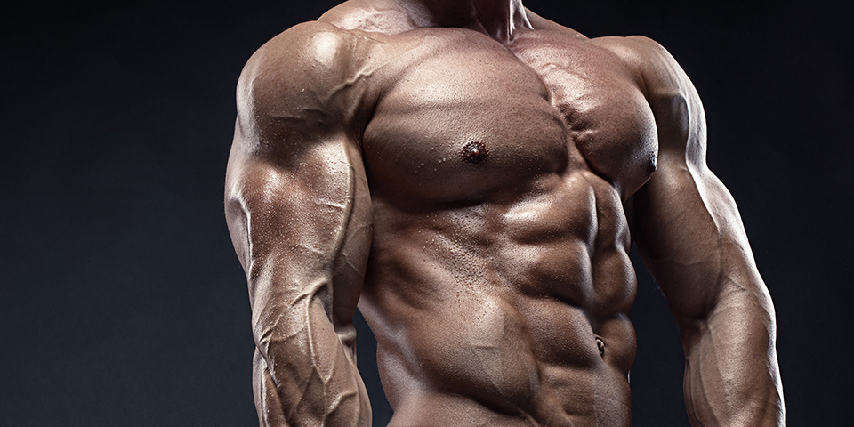

Beginner
What seems impossible today will one day become your warm-up. Everyone starts as a beginner, here are routines suitable for Newbies
Go to Beginner exercises
IntermediateI don’t count my sit-ups. I only start counting when it starts hurting because they’re the only ones that count
Go to Intermediate Exercises

AdvancedYou have to push past your perceived limits, push past that point you thought was as far as you can go. Don’t limit your challenges. Challenge your limits.